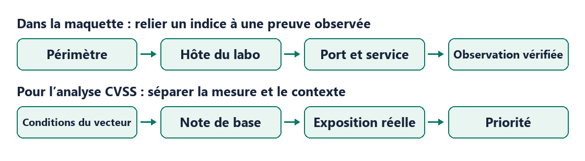

Comprendre le cours
1. Que cherches-tu à prouver ?
Un test d’intrusion vérifie si une faiblesse exploitable existe dans un périmètre autorisé. Note les systèmes concernés, les techniques permises et les limites. Un bug bounty est un programme avec ses propres règles. Consulter sa fiche permet de déterminer quels actifs peuvent être testés et comment signaler un résultat.
- Reconnaissance : recueillir des indices sur les actifs et technologies.
- Scan et énumération : observer les machines et services accessibles dans le périmètre.
- Évaluation : examiner les conditions d’une vulnérabilité et décider comment la vérifier.
- Validation et rapport : établir une preuve suffisante sur la cible autorisée, expliquer l’impact et proposer un contrôle après correction.
2. Distinguer passif, actif et constat

Consulter une fiche ou un registre de certificats relève de la reconnaissance passive vis-à-vis de la cible. Envoyer des sondes est une action active qui peut laisser une trace. Un sous-domaine historique ou un certificat générique indique une piste. Date-la et recoupe-la avant d’en tirer une conclusion.
| État du port | Ce qu’indique la mesure |
|---|---|
open | Un service répond comme accessible depuis ce point d’observation. |
closed | La cible répond mais le port n’est pas ouvert. |
filtered | Le scan ne permet pas de conclure sur l’ouverture parce que des sondes ou réponses semblent filtrées. |
Le port est une porte logique vers un service. Un numéro connu comme 22 pour SSH donne une hypothèse, et la détection de version permet de mieux l’étayer. Une mesure UDP sans réponse peut rester ambiguë.
3. Passer de la version au risque
Une CVE est un identifiant de vulnérabilité. Le CVSS décrit sa sévérité. Dans le vecteur 3.1 du cours, AV indique le vecteur d’attaque, AC la complexité, PR les privilèges requis, UI l’interaction utilisateur et S la portée. C, I et A décrivent les impacts sur confidentialité, intégrité et disponibilité.
Un scanner peut signaler un produit sur la base d’une bannière. Vérifie l’avis de l’éditeur, la version réellement installée, les correctifs et la configuration nécessaire. Pour ordonner le travail, prends aussi en compte l’exposition et les usages du système.
4. Comprendre la validation et écrire le rapport
Un exploit utilise le mécanisme d’une faille. Un payload est l’action déclenchée après le passage de ce mécanisme. Le support distingue les connexions où l’outil se connecte à la cible et celles où la cible revient vers une machine de test. Pour une preuve utile, choisis une action minimale dans la maquette et conserve le contexte de l’essai.
Un proxy Web permet de lire les requêtes et réponses de ton navigateur de test. Pour une authentification, regarde la méthode, le chemin, le code, la réponse et la présence d’un cookie de session. Un code 200 peut aussi correspondre à un formulaire qui affiche une erreur.
La force brute multiplie les essais par compte. Le spraying essaye peu de mots de passe sur plusieurs comptes. Le stuffing réutilise des couples identifiant–mot de passe divulgués. Compare les traces à partir de comptes fictifs. La limitation, les alertes, le renouvellement des secrets exposés et l’authentification multifacteur réduisent le risque.
Clore un test et produire un constat vérifiable
Le poly va jusqu’au maintien de l’accès et à la suppression de traces. Pour comprendre ces étapes, distingue la démonstration autorisée du risque, la restauration de la maquette et la conservation des preuves. Documente les comptes, fichiers ou services temporaires créés pendant le test. Remets la maquette dans l’état prévu et conserve les journaux et les captures utiles au rapport.
Pour le cas du proxy, relève la requête qui établit l’authentification et une réponse qui confirme l’accès à une ressource protégée. Note le contexte, les étapes et l’impact observé. Masque les valeurs de session et les mots de passe dans le rapport partagé. Explique ensuite comment vérifier qu’un correctif change le résultat avec les deux mêmes essais.
Sigles et acronymes
- CVE · Common Vulnerabilities and Exposures
- Identifiant public d’une vulnérabilité répertoriée.
Exemple. Dans un rapport, l’identifiant CVE permet de retrouver la fiche et le correctif associé. - CVSS · Common Vulnerability Scoring System
- Système de notation de la gravité d’une vulnérabilité.
Exemple. Un rapport donne la version de CVSS, le score et les facteurs qui expliquent ce score. - IP · Internet Protocol
- Protocole d’adressage et d’acheminement des paquets.
Exemple. Le routeur lit l’IP de destination pour choisir où envoyer le paquet. - SSH · Secure Shell
- Connexion distante chiffrée.
Exemple. Depuis ton poste, tu ouvres un terminal distant sans exposer les commandes en clair. - TCP · Transmission Control Protocol
- Transport des données avec suivi des échanges et retransmission.
Exemple. Les routeurs BGP établissent une session TCP avant d’échanger leurs annonces. - UDP · User Datagram Protocol
- Transport par datagrammes sans établissement de connexion.
Exemple. Un client peut envoyer une requête DNS classique dans un datagramme UDP. - VM · Virtual Machine
- Ordinateur simulé par un hyperviseur.
Exemple. On peut lancer un serveur Linux en VM sur le poste de TP.
Du cours aux TD et TP
Support croisé · Poly avec exercices TD intégrés. Les cinq VM TCM sont annoncées dans le cours. Les sujets détaillés correspondants n’ont pas été retrouvés dans les fichiers disponibles.
| Notion du cours | Où la travailler | Ce que tu dois savoir refaire |
|---|---|---|
| Mandat et périmètre | Poly, exercice Bugcrowd | Relever les cibles autorisées, exclusions et règles avant toute action et faire un inventaire des preuves attendues. |
| Reconnaissance passive et active | Poly, exercices de collecte | Ranger les résultats par source, distinguer une piste publique d’une interrogation envoyée à la cible et identifier une limite de chaque méthode. |
| Vérification et score CVSS | Poly, exercices services et CVSS | Distinguer port, version et vulnérabilité confirmée, retrouver les métriques et expliquer ce qui change la priorité dans le contexte. |
| Validation, preuves et rapport | Poly, cas proxy Web et partie méthodologie | Relier observation et impact, conserver des preuves reproductibles, indiquer les limites et le correctif, et documenter le nettoyage de la maquette prévu au mandat. |
Questions TD & TP
Le support téléchargeable masque les accès de labo et les captures d’authentification concernées. Les ateliers actifs ci-dessous se font sur les VM attribuées.
TD · Lire la fiche du programme Bugcrowd
Énoncé. Retrouver ce qui est autorisé dans la fiche demandée et ce qui sort du périmètre.
- Identifie la liste des cibles incluses et les exclusions, puis relève les exigences de test et les limites de débit.
- Distingue « l’actif figure dans le programme » et « cette technique est autorisée sur cet actif ». Pour chaque exemple du TD, note actif, décision et règle qui la justifie.
- Relève la façon de remettre le rapport. La fiche pouvant évoluer, appuie la réponse sur la version consultée pour le TD.
TD · Organiser les indices de reconnaissance
Énoncé. Utiliser les sources du cours pour identifier les noms et expliquer la valeur d’un indice.
- Commence par le domaine retenu dans l’exercice. Distingue adresse de messagerie, nom d’hôte et suffixe de domaine.
- Dans un certificat, relève les noms couverts et sa période. Un joker couvre une catégorie de sous-domaines et ne fournit pas une liste des machines existantes.
- Pour chaque résultat, indique source, date et confiance. N’attribue pas un service à une machine sans confirmation. Ne publie pas de données de comptes dans la preuve.
TP · Découvrir puis décrire les ports de la VM Kioptrix
Énoncé. Détecter la VM vulnérable prévue par le cours, relever les services et expliquer ce que la capture prouve.
- Vérifie le réseau virtuel et repère l’adresse de ta VM cible. Limite la découverte au segment configuré pour l’exercice.
- Observe les ports demandés par le TP. Pour un contrôle ciblé, utilise
nmap -sV -p 22,80 IP_DE_LA_VM. En capture, compare les réponses aux sondes. Si aucun service ne répond sur ce port, relève précisément si le résultat est fermé, filtré ou ambigu. - Note IP de maquette, port, protocole, état, service et version présumée. Recoupe la version et la configuration avec l’avis correspondant. Un port ouvert n’est pas une vulnérabilité à lui seul.
TD · Reconstituer le vecteur CVSS du support
Énoncé. Lire le vecteur CVSS version 3.1 et relier la note aux conditions réelles.
AV:N / AC:L / PR:H / UI:N / S:U / C:L / I:L / A:N- Lis : accès réseau, faible complexité, privilèges élevés, aucune interaction, portée inchangée. Confidentialité et intégrité faibles, disponibilité sans impact.
- Renseigne le calculateur 3.1 avec ces métriques. Pour un vecteur plus long, sépare les métriques temporelles ou environnementales du vecteur de base. Compare les résultats à version constante.
- Si tu analyses une CVE, utilise son identifiant exact et son avis. Compare versions corrigées et versions concernées avant de classer la machine.
TP · Observer la différence entre deux connexions Web
Énoncé. Repérer la requête d’authentification dans le proxy et expliquer comment reconnaître un résultat.
- Utilise le navigateur de test du proxy ou configure-le pour la session de maquette. Envoie une requête à ton application de test et retrouve-la dans l’historique.
- Avec un compte fictif, compare une demande correcte et une incorrecte. Note méthode, chemin, statut, indication d’erreur et éventuelle création de session. Garde une capture où les données secrètes ont été masquées.
- Dans le rapport, relie une éventuelle faiblesse à son impact et à un test après correction. Par exemple, après l’ajout d’une limitation, consigne la réponse obtenue quand le seuil de test est atteint.